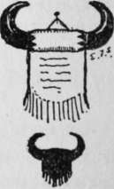

Arriving On The Camp Ground
Description
This section is from the book "The Book Of Woodcraft", by Ernest Thompson Seton. Also available from Amazon: The Book of Woodcraft.
Arriving On The Camp Ground
As soon as all are on the ground, with their baggage, let the Leader allot the places of each band or clan. Try to have each and every dwelling-tent about 25 feet from the next, in a place dry and easy to drain in case of rain and so placed as to have sun in the morning and shade in the afternoon.
Each group is responsible for order up to the halfway line between them and the next group.
Loose straw, tins, papers, bottles, glass, filth, etc., out of place are criminal disorder.
Pitch at a reasonable distance from the latrine, as well as from the water supply.
As much as possible, have each band or clan by itself.
As soon as convenient, appoint fellows to dig and prepare a latrine or toilet, with screen.
All will be busied settling down, so that usually there is no methodic work the first day.
But the second day it should begin.
Camp Officers And Government
After the routine of rising, bathing, breakfast, etc., there should be called at eight o'clock a High Council. That is, a Council of all the Leaders, Old Guides or Medicine Men, and Head Chief; that is, the Chief of the whole camp, appointed for that day. He is the Chief in charge, or Head Man of the village. It is his duty to appoint all other officers for the day, and to inspect the camp. In some camps this High Council meets at night when the younger members are asleep. The other officers are:
Assistant Chief In Charge
Who goes about with the Chief and succeeds him next day.
Keeper Of The Milk And The Ice-Box
When there is ice for the milk.
Keeper Of The Letters
He takes all letters to the post and brings back all mail.
Keeper Of The Canoes
No boats may be taken without his sanction, and he is responsible for the same.
Keeper Of The Garbage
He must gather up and destroy all garbage each day at a given hour; preferably late afternoon.
Keeper Of The Latrine
He must inspect hourly, and see that all keep the rules.
Keeper Of The Campfire
He must have the wood cut and laid for the Council-fire at night, with an extra supply for all the evening, and must keep the Council-fire bright, not big; but never dull.
Also, the High Council should appoint a Tally Keeper for the whole camp; he is to serve throughout the whole period of the encampments, keeping the records for every day. Sometimes the work is divided, but one fellow can do it better, if he is willing.
A band or clan prize for the whole term is always offered. The competition for this is judged by points, and for each of the above services to the camp, the band, to which the scout belongs, gets up to 25 points per day, according to his efficiency.
No fellow should leave camp without permission. If he does so, he may cause his Band to lose points.
The Dog Soldiers
In every large camp it is found well to follow the Indian custom in forming a Lodge of Dog Soldiers. These are a band of eight or ten of the strongest and sturdiest fellows. They act as police when needed, but wear no badge. They must at once run to any place where the signal (a loud baying) is heard, and act promptly and vigorously.
When the Chief has selected the huskies he wishes to have in the Dog Lodge, he invites all to meet secretly in some quiet teepee at night, explains the purpose and adds "I have called on you who are here. If any do not wish to serve, now is the time to retire".
The sacred fire is lighted in the middle, all stand in a ring about it, each with his right hand on a war club above the fire, his left holding a handful of ashes. Then all repeat this vow:
"As a Dog Soldier I pledge the might of my manhood to the cause of law and justice in this Camp for the term of the Camp or until released by the Chief, and if at any time I fail in my duty through fear entering into my heart, may I be dropped, scorned and forgotten like these ashes".
Then he scatters the ashes.
It is customary for each Tribe to adopt further a secret sign and password, which is taught to the Dog Soldiers as a finish.
Inspection
Every day there is an inspection. It is best in the middle of the morning. The Chief and his second go from tent to tent. Each Clan is allowed 50 points for normal, then docked 1 to 10 points for each scrap of paper, tin, or rubbish left lying about; also for each disorderly feature or neglect of the rules of common sense, decency or hygiene, on their territory; that is, up to halfway between them and the next group. They may get additional points for extra work or inventions, or unusual services for the public good; but it is always as a Clan that they receive the points, though it was the individual that worked for them.
After the inspection, the Chief announces the winning Band or Clan saying: "The Horns of the High Hikers were won to-day by.....Band." And the horns are accordingly hung on their standard, pole or other place, for the day. At the end of the camp, provided ten were present for at least a fortnight, Clan or Band that won them oftenest carries them home for their own; and ever afterward are allowed to put in one corner of their banner a small pair of black horns.
The Wolf Band banner p. 77 shows that they have twice captured the horns.
The Horns Of The High Hikers
What are they? Usually a pair of polished buffalo horns with a fringed buckskin hanger, on which is an inscription saying that they were won by.....Band at such a camp.
When buffalo horns cannot be got, common cow horns or even horns of wood are used.
Council Fire Circle
In every large permanent camp I establish a proper Council-fire Circle or Council Camp. The uses and benefits of these will be seen more and more, as camp goes on.
For the Council-fire Circle, select a sheltered, level place that admits of a perfectly level circle 40 feet across; 30 feet has been used, but more room gives better results. On the outer rim of this, have a permanently fixed circle of very low seats; 6 inches is high enough, but they should have a back, and for this, the easiest style to make is that marked K. L. on page 457. Each Band or Clan should make its own seat, and always go there in Grand Council. On the back of the seat should be two loops of wire or string in which to put their standard. Back of the first row should be a slightly higher row. If the ground slopes up, all the better, but in any case there should be fixed seats enough for all the camp. The place should be carefully leveled and prepared, and kept always in order, for it will be used several times each day, either for councils or for games, dances and performances.
Continue to:
- prev: X. Campercraft Or The Summer Camp
- Table of Contents
- next: Arriving On The Camp Ground. Continued
Tags
bookdome.com, books, online, free, old, antique, new, read, browse, download